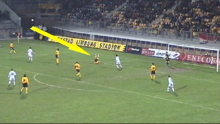
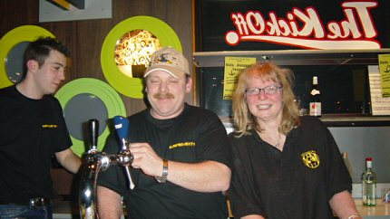
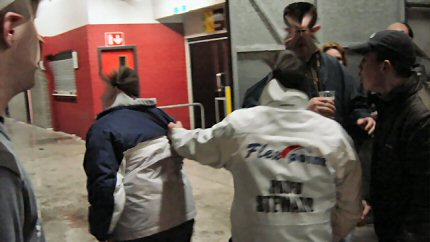

|
Roda JC - Alemannia Aachen (0-2) 15 januari 2005 |
Roda JC
- Alemannia Aachen (0-2) 15 januari 2005
Voorafgaand aan de oefenwedstrijd tegen Alemannia Aachen werd de
zuidtribune officieel hernoemd tot de Theo Pickée Tribune als eerbetoon
aan de vorig jaar overleden voorzitter van onze club.
"You'll never walk alone" weerklonk door zijn Parkstad
Limburg Stadion.
De sjaals gingen massaal de lucht in.
Het vuur ging van hand tot hand op de Theo Pickée Tribune.
Hetzelfde op de West Tribune.
Er waren vanavond meer Duitsers dan Nederlanders. Ook onze
vrienden
van Mechelen waren paraat.
Aachen komt in de 16e min. op voorsprong door een goal van
Meijer.
De aanvoerder aan de bal.
De defensie van Roda was vanavond niet op orde.
In deze vrij matige wedstrijd komt Roda nauwelijks tot
fatsoenlijk voetbal.
Pas in de tweede helft krijgt Kone een mooie kans op de gelijkmaker. Hij
stuit echter op doelman Nicht.
Schlaudraff maakt 0-2, (62').
Vreemd om je eigen vak uit de bol te zien gaan bij een
tegengoal...
Van Dijk in de clinch met scheidsrechter Wouters.

Bodnar is behalve mijnwerker, modepop en patser ook een acrobaat.
Het overgebleven vuurwerk van oud op nieuw moet toch op...
De wedstrijd eindigt 0-2.
Na de wedstrijd was er een feest in de Kick Off met Roda-, Aachen-
en
KVM-supporters. Ook was de voltallige selectie aanwezig.
Nederlands beste exportproduct.
Deze bekende Belg had leuke pins in de aanbieding.
Het was gezellig druk in de Kick Off.
Helaas was de door de selectie aangeboden sate al snel
weggevreten door
dagjesmensen die je normaal nooit ziet. Voor velen was er slechts een
kwakje satesaus met een handvol kroepoekschilfers te bemachtigen.
Of in dit geval twee handen vol....
Gezellige tuupen.
Op de foto met Bodnar zo lang het nog kan.

Vicelich met aankomend Rodameëdsje Angelique.
Vloet temidden van vrolijke tuupen.
Humphry Rudge was er ook. Samen met enkele gezellige tuupen.

Enkele harde werkers van het FP die deze avond mede mogelijk
maakten.
Een individu die zijn rekening niet voldeed veroorzaakte een
incident dat
leidde tot een onmiddellijke drooglegging van de biertap.

Deze wissel wordt u aangeboden door Flexpoint...
Deze zatte gast heeft morgen heel veel koppijn.
Het alcoholvrije feest ging rond 01.00 uur helaas al uit.
Niettemin een
geslaagde avond.